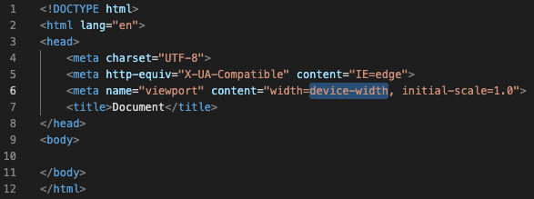

Módulo muito interessante, pois podemos ter noção de como foi o início de tudo que temos hoje.
Hoje é fácil poder levar nossos laptops em mochilas e termos a facilidade de trabalhar em qualquer lugar do mundo e a hora que quisérmos.
Temos muito a agradecer à todos que iniciaram com máquinas do tamanho de um "prédio", pois graças a eles temos máquinas hoje com um poder de processamento milhares de vezes maior e que cabem em nossas mãos.
[voltar]Nesse módulo aprendemos como funciona a requisição para abertura de uma página web.
Embora tenhamos que apenas digitar o endereço/domínio na barra de endereço do browser, todo esse processo é bastante complexo.
Podemos dizer que nós como clients, não vemos esse processo que acontece entre nossa máquina e os servidores que hospedam as informações que queremos.
[voltar]Servers são máquinas que armazenam todas as informações que queremos quando fazemos uma requisição no browser.
Além de servers complexos com capacidades extremamente grandes, podemos ter um servidor básico em casa ou em uma pequena empresa para podermos aramazernar e compartilhar informações.
Podemos também contratar um serviço de domínio e assim termos nossos sites/emails com características próprias.
[voltar]Nesse módulo vimos alugumas das diferentes linguagens de programação que podemos aprender.
Vimos também que linguagens que são executadas pelos Clients, linguagens executadas pelos Servers e que a linguagem JS ela pode ser executada pelo Client e pelo Server.
Abriu-se aquela famosa polêmica:
HTML é uma linguagem de programação?
Não! É um arquivo de marcação com textos delimitados por funções que o navegador consegue interpretar.
[voltar]HTML é uma marcação que fazemos no texto e assim deixamos como bem quisermos
Existe uma estrutura básica que combinada com as marcações, transformam nosso texto em uma linda página web.
Abaixo podemos verificar a Estrutura Básica de uma página HTML:
